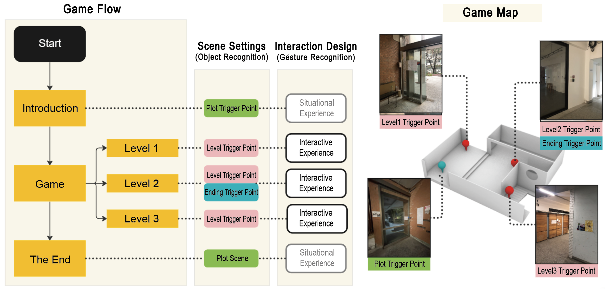

0. Virtual-Real
Interaction
with AR/VR
# AR/VR/MR
# Extended Reality
# Digital Interaction
# Human-Environment Interaction
Digital development has blurred the boundaries between people and space, enabling real-time remote communication without physical presence. This shift challenges the traditional notion of spatial proximity. Concurrently,
Extended Reality (XR)
technology breaks through the established pattern of human and space, and redefines the interactive relationship between human and information in this context.
Although multiple AR applications are approaching maturity in the game development, AR is limited to the visualization of virtual information overlaid on the real environment. Addtionally, its interaction mode is single, mostly occurring on the control panel, cannot directly interact with the physical field in the system. The real field ultimately became the background screen of the game interface.
The purpose of this prototype is to break the limitations of the AR interactive mode, emphasising the fusion of the real and virtual environments.
1. System Design
and Interactive
Mechanism
# Unity Engine
# Android APP
# Spatial Perception
# User Experience
This project aims to create a new mode of field experience, based on Augmented Reality(AR) and gesture recognition(GR) technology to develop an MR interactive mobile game with spatial integration.
Gesture is the most natural way of intuitive communication for human. Therefore, moving beyond the touch screen and established interactive mode of human body, space and information in mobile devices, we can enhance user's perceptual integration in the virtual and real environments using VR and GR.
System Architecture
Development Environment and Tools
Developement Platform
- Unity Engine
- Android Studio
Software Development Kit
- Vuforia Engine AR
- ManoMotion SDK
- ARcore SDK
In this system, we utilized two Unity development kits, Vuforia Engine AR platform and ManoMotion SDK, however, they have different requirements for cameras setup. Therefore, we take a main map scene as the entrance of each interactive experience, and restarts the camera by changing scenes when switching kits, so as to facilitate the construction of individual systems for different recognition mechanisms.
Vuforia Engine
as a development kit for
tracking target image
,is used to explore the scene and trigger the plot development.
ManoMotion SDK
as a development kit for
gesture recognition
,is used to change the interactive mode.
2. GAME DESIGN
and
IMPLEMENTATION
# Game Development
# Image Recognition
# Gesture Tracking
# Escape Room
In order to explore the impact of XR on users' spatial perception in mobile games, this project chooses the "Escape Room" game, which provides a more immersive spatial experience, as a prototype to maximize the integration of spatial and game experiences.
(1) Target Image Tracking
To create an image target, this project uses
Vuforia Target Manager
to deploy
Image Database.
After uploading target images to device database in Target Manager, the Manager will perform image evaluation and processing.
Once all images have been successfully uploaded, the database can be saved as a unitypackage file.
An "AR Camera" layer must be created and a license key must be entered into that layer to activate the image recognition mechanism.
Next, we create several Image Target layers. In the Layer Inspector window, we select the target object(s) to be applied to the scene in order to track the selected target object(s).
The image tracking mechanism can be activated at this stage. When the target image is captured by the device's camera, it can be used as a trigger condition for the corresponding mechanism. In order to create various interactive experiences, this case triggers three corresponding mechanisms:
scene jumping, layer opening,
and
3D model following.
(2) Gesture Recognition
As for gesture recognition, this project uses the
ManoMotion SDK
and
AR Foundation
for this experimental game development.
First, import the ManoMotion SDK file into Unity and key in the license password, then create an "AR Camera" layer in the scene and bind it to the "AR Camera" layer with the Mano Utils and Input Manager AR Foundation to "ARManomotionManager" layer.
Afterwards, the camera can be activated to recognize gestures.
ManoMotion SDK has categorized gesture recognition into three main types of gestures and two triggering effects, the types of gestures are
Grab, Pinch
and
Point
, and the triggering effects are
Continuous Gestures
and
Trigger Gestures
Gesture category in ManoMotion is called Manoclasses, through the analysis of the skeleton of the first few frames and the last few frames of the changes in the current detection and analysis of the Manoclasses information and the implementation of the definition of the gesture effect.
Game Design
The prototype test site for this project is a 20.2 square meters indoor space. The entire site serves as the main scene, and players go to three designated locations to interact with the game levels. In order to establish a close interactive relationship with the field, five image identifiers are scattered in the game field. Players must follow the game prompts to go to the designated location to trigger the game storyline or level entry. At the end of each level experience, the final plot will be triggered.

(1) Scene Settings
There are five image identification objects scattered in the field, and their locations can be divided into plot trigger points, level trigger points and ending trigger points according to their functions. The
plot trigger point
is selected at entrance and exit, which serves as the trigger for the start of the game. There are three
level trigger points.
Players can scan the props to view the virtual 3D map model to get the location of the level trigger point.
Go to scan the identification card to activate the level entry; the level trigger point is the content of one of the levels.
Players will find the location of the trigger point through text puzzle clues, scan and complete the level.
(2) Interaction Design
Play experience can be divided into two categories based on interactive mode: situational experience and interactive experience.
Situational experience
means that the real scene is presented on the device screen through the camera, which serves as the background image of the game UI. Combined with the plot development, the player can be more immersed in the story.
Interactive experience
means that the player will perform appropriate operations according to the prompts. This includes walking to a designated location to scan image recognition objects, capturing hand movements through the camera and performing specific gestures according to instructions to interact with game content.
3. User Testing
and Conclusion
# User Experience
# Spatial Perception
# Qualitative Analysis
Reseach Design
This project employs interviews to explore the
qualitative analysis regarding user experience.
Specifically, its development potential in the field of interactive design
and the influence of users on spatial perception.
The objective is to enhance the integration of the virtual environment
and the real field by developing new spatial interaction models.
Therefore, this interview analyzed three key topics:
1. The fun of the game experience.
2. The user's perception of the test field / the extent of impact on spatial cognition.
3. The ease of usage of the system operation.
These three topics correspond to the expected goals of
this article in order: meeting market demand, improving spatial perception,
and inspiring development potential.
Therefore, according to the ten optimization principles of user interface design
and experience quality, this project designed seven related questions
on key topics to conduct interviews with the subjects.
Conclusion
In order to realize the experience of human-information interaction
and to inspire the application potential of mixed reality
technology, this project designed an escape room-type digital
interactive game on mobile devices, using "gesture interaction"
as one of the game mechanisms to achieve virtual reality.
The purpose of this project is to develop the interactive mode
of AR and MR technology and
its impact on users' spatial experience.
In terms of spatial perception, the participants who were initially less familiar with the field can describe the field more clearly, indicating that the project can effectively improve users' spatial perception and memory of space.
In terms of operational difficulty, the participants report that the project is easy to understand and could play smoothly through intuitive operation.
After measurement and investigation, it indicates that introducing field interaction and gesture recognition into games can improve the user's perception of the field and create a richer spatial interactive experience.
An architect and computer engineer dedicated to crafting innovative
Human-Computer Interfaces that integrate the convergence of the digital
and physical realms.

Leave a comment